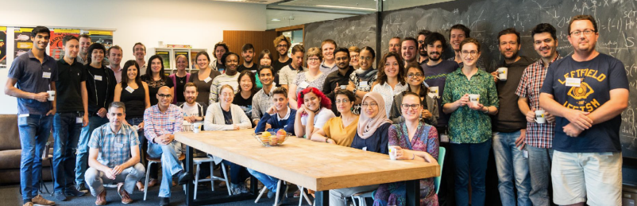

Overview
This documentation provides information on methods for hosting and facilitating participant-driven data science workshops. The approaches described here come out of experimentation with the hackweek model designed within the Moore/Sloan Data Science Environment, and borrow ideas from The Carpentries. Previous events include astrohackweek, geohackweek, neurohackademy, waterhackweek, oceanhackweek and Cryospheric Sciences with ICESat-2 hackweek.

The overall mission of these types of events is to create conditions that foster and enable:
- building a community of practice around open source, reproducible data science methods
- education on the use and application of data science toolkits, especially those not currently being taught in traditional university curricula
- opportunities for networking and learning about job opportunities and career pathways
- practice in working in small collaborative team settings
- project work aimed at making rapid progress on specific data science challenges
- exploring and practicing healthy and professional modes of behavior within scientific communities
In general, these events aim to blend the best elements of summer schools and hackathons. There is no one right way to host and facilitate these events, and each version has experimented with a range of different approaches. This documentation is intended to serve as a general reference for event planners to choose from a range of tools that we have found work well. Specific implmentations will depend on the group size, the level to which particular communities have already adopted open source and reproducible methods, and the specific learning objectives of each event.
One unifying element of our work is that we intend to teach and colloaborate in ways that are inclusive of people from a diverse range of backgrounds. Throughout our documentation we try to identify ways that we think this can be achieved, while recognizing that we have much to learn and that this a constantly evolving area of work for us.
How to contribute
This is an evolving document, and we invite other organizers or past event participants to contribute ideas and feedback. Do you disagree with anything we have posted? Have you tried activities within you events, other than what we describe here, that you think need to be shared? We welcome your contributions in the form of issues, pull requests and/or direct emails to Anthony Arendt and Daniela Huppenkothen.